Research
We study the atomic nucleus through its effect on the electron shell of short-lived atoms and molecules. Electronic orbitals that penetrate deeply into the nucleus, combined with entangled states — quantum sensors — of single molecules held in ion traps, let us measure fundamental effects of the Standard Model of particle physics and search for physics beyond it.
In particular we probe effects of the nuclear electroweak structure that violate parity, one of the three fundamental symmetries of nature. One such effect is the nuclear anapole moment, expected to shift electronic energy levels by hertz to kilohertz — well within reach of precision laser spectroscopy. Those shifts could be caused by new particles mediating dark matter or dark energy, which make up most of the matter and energy in the universe and remain one of the big open questions in physics.
Understanding parity violation is also the necessary step before measuring nuclear electric dipole moments, a time-symmetry-violating effect orders of magnitude larger than its electron EDM counterpart. An EDM measurement bears on the matter–antimatter asymmetry puzzle: why we see far more matter than antimatter, and how we can exist at all within the Big Bang framework.
With our collaborators we run precision laser spectroscopy and ion trapping experiments at the U.S. Facility for Rare Isotope Beams and its European counterpart at CERN-ISOLDE. As part of the NEPTUNE collaboration, a development platform for quantum sensing on stable molecules is being commissioned in the Garcia Ruiz Lab at MIT, and a dedicated facility for quantum sensing of radioactive molecules is underway here at the Cyclotron Institute.
We also develop ultra-sensitive laser spectroscopy techniques in ion traps to study the electronic structure of molecular ions produced in minuscule quantities — for instance artificially created radioactive molecules with high sensitivity to symmetry-violating nuclear effects. This work reaches beyond nuclear and AMO physics into quantum chemistry, the astrophysics of cold molecular clouds, and medical isotopes for cancer treatment.
Ongoing projects
-

NEPTUNE
Single molecular ions as quantum sensors for electroweak nuclear effects. A Penning trap holds one molecular ion; entangled states amplify symmetry-violating signals by more than twelve orders of magnitude over the equivalent measurement in atoms.
More below ↓ -
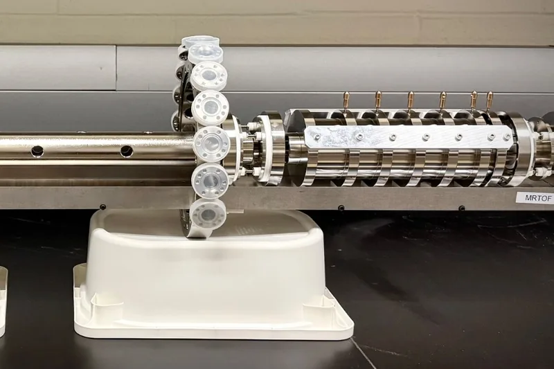
Stored ions for nuclear science
Multi-reflection time-of-flight mass spectrometry and in-trap laser spectroscopy on rare isotopes, including a laser-spectroscopy MRTOF (MRTOF-LS) being built on campus for species produced in vanishingly small quantities.
More below ↓ -
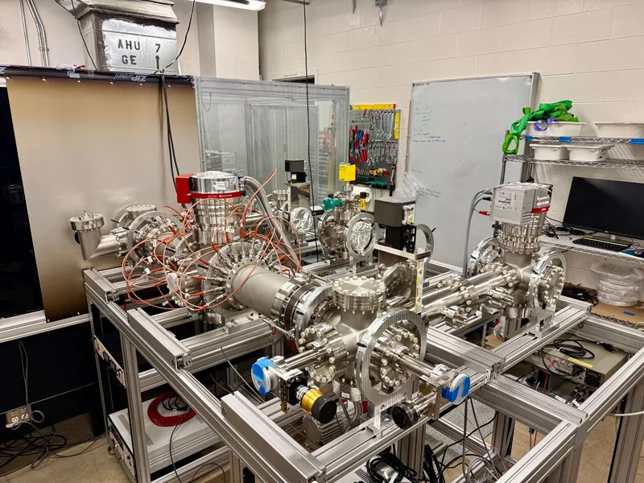
AI-driven experiment control
Under the DOE Genesis Mission: AI-powered digital twins and agentic control systems for nuclear physics experiments, aimed at getting more science out of scarce national beamtime.
More below ↓
NEPTUNE
Single molecular ions in a Penning trap as quantum sensors for the weak interaction inside the atomic nucleus.
The weak interaction does not respect mirror symmetry: it mixes nuclear and atomic states of opposite parity. Inside the nucleus it leaves a tiny trace, the nuclear anapole moment, that has been measured in exactly one atom, 133Cs, in 1997. That result disagrees with the nuclear data, and no new atomic measurement has been made in almost thirty years.
The signal grows as the two mixed levels approach each other. In atoms they sit about 1 eV apart; in molecules, rotational levels of opposite parity are only about 10 µeV apart, and a magnetic field can tune them to an exact crossing. The effect also grows with the size of the nucleus, and pear-shaped (octupole-deformed) nuclei add further amplification, which points to heavy, radioactive molecules.
NEPTUNE does this with a single molecular ion held in a Penning trap. The trap's magnetic field brings two opposite-parity levels to a crossing (for SiO+ near 1.53 T), a small electric field mixes them, and state-selective laser ionisation reads out the mixing. Single-ion techniques already work at rare-isotope facilities at rates below one ion every half hour, and we expect a statistical sensitivity of about 10 % on the parity-violating matrix element within one week of measurement.
Seeing a single ion takes a quiet environment. The trap is cooled to 4 K, and the ion's motion is picked up through the tiny current it induces in the trap electrodes, using a superconducting resonator and a SQUID amplifier.
Where we stand
- 2024 Concept and full uncertainty budget published in Physical Review Letters.
- 2025 Cryogenic Penning trap with three compensation electrodes, and ppm-stable power supplies, built with the group of Klaus Blaum at MPIK Heidelberg. First SQUID signal.
- 2026 Proof-of-principle setup in Ronald Garcia Ruiz's lab at MIT: resonance-ionisation spectroscopy of SiO+ under way; final superconducting NbTi detection resonator (2,340 windings) characterised at room temperature and at 4 K.
- Next A proof-of-principle parity-violation measurement, then NEPTUNE moves to the Cyclotron Institute for radioactive molecules.
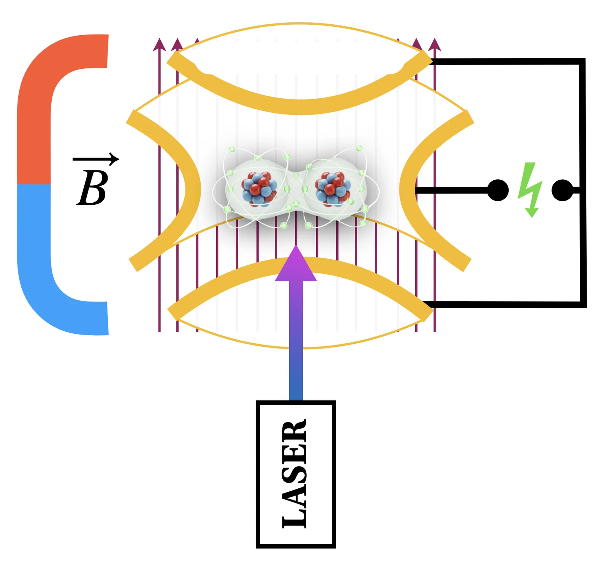
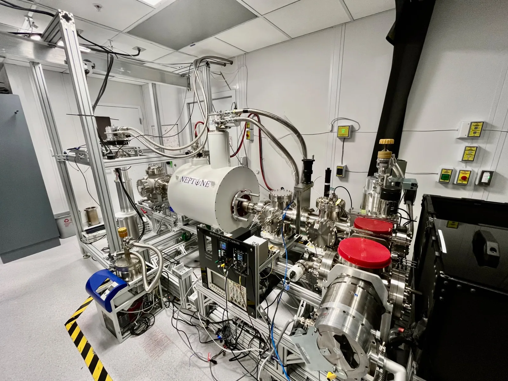
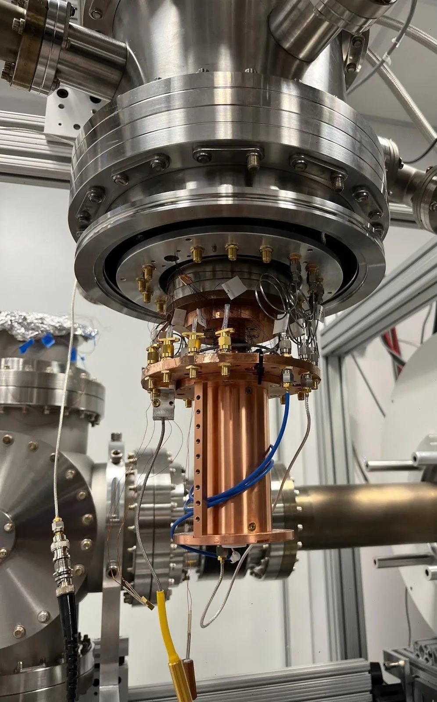
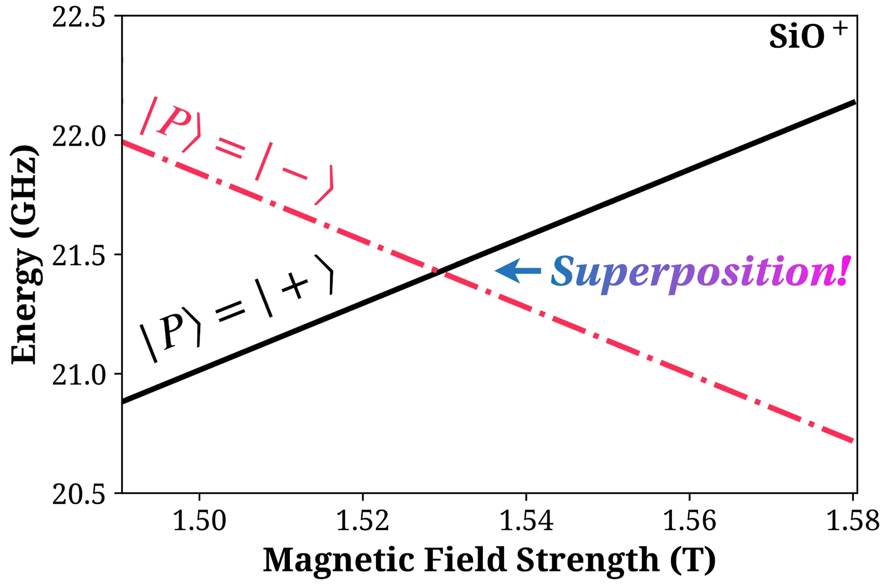
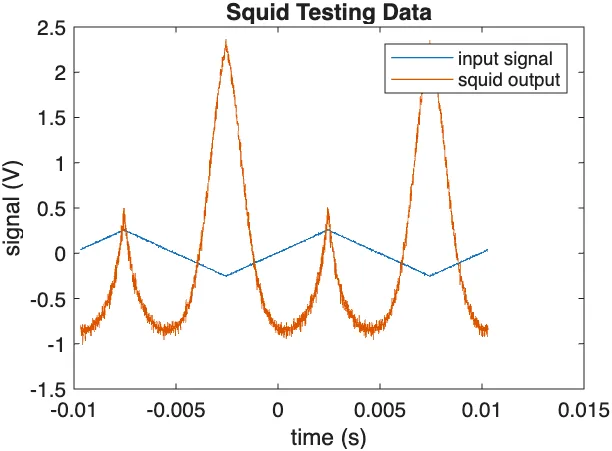
MR-ToF action spectrometer
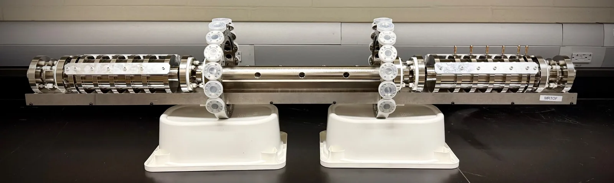
Laser spectroscopy that counts ions instead of photons, for atoms and molecules made only a few at a time.
A multi-reflection time-of-flight (MR-ToF) device traps ions between two electrostatic mirrors. After hundreds of reflections, ions of almost the same mass arrive at different times, with a resolving power m/Δm above 100,000. We run it as an action spectrometer: a laser drives a resonance (photodissociation of a molecular ion, or resonance ionisation of an atom), and the product has a different mass, so it leaves the time-of-flight peak of its parent. Only ions that are both resonant and mass-resolved reach the detector, which gives zero background at any rate, down to single ions.
The spectrometer, two mirrors of six ring electrodes each around a 0.4 m drift section, sits on our off-line beamline at the Cyclotron Institute. A supersonic-expansion laser-ablation source (first ions in December 2025) feeds it through 3D-printed quadrupole benders, with lasers from the infrared to the ultraviolet. Commissioning with stable beam is under way, and we are aiming for a first trapped-ion mass spectrum by the end of 2026.
At rare-isotope facilities, the gas cells that stop the beam also release many molecular ions (CO+, O2+, NO+, SiO+ and more) at nearly the same mass as the isotope of interest. A collision-induced dissociation cell behind a thin silicon-nitride window breaks them up before the spectrometer, or can be bypassed when the molecules are what we want to study.
The first science case is oxygen, the only proton-magic element never studied by laser spectroscopy: 14,15O from the new Low-Energy Research Area at the Cyclotron Institute, and 19–24O at FRIB.
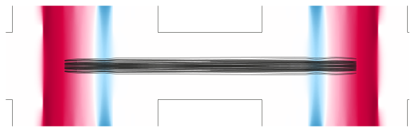
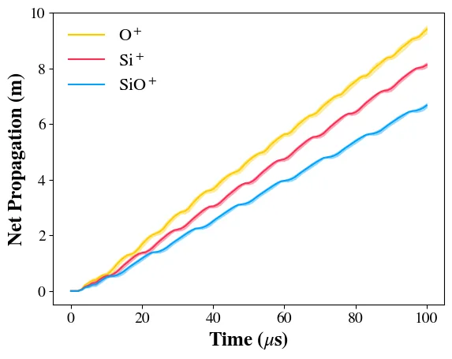
Agentic digital twins: the DOE Genesis Mission
Getting more science out of every hour of beamtime.
The Genesis Mission is the Department of Energy's national initiative to speed up U.S. science with AI. Our Phase I project, which started on September 1, 2026, takes on the challenge of increasing experimental capacity at nuclear research facilities, with a team from Texas A&M, MIT, Argonne National Laboratory and FRIB.
Precision nuclear experiments are the opposite of big data. A setup runs a few times a year, an experiment produces kilobytes, beamtime costs tens of thousands of dollars an hour, and around a hundred parameters are tuned by hand, often by tired operators in the middle of the night. Temperature drifts shift the measurement, beam is lost and has to be found again, and scans spend most of their time where there is no signal.
Our answer is a digital twin: not a 3D visualisation, but a fast physics model of the experiment that stays in sync with it. Measurements flow into the model, which re-fits its physical parameters; the model sends better settings back through the control system; the operator supervises and sets the goals. The Phase I target is a demonstrated two-fold gain in experimental capacity, by tuning the beam automatically and holding the trap's timing steady against lab temperature.
Building blocks
- FastSims, our ion-optics simulation code, written in PyTorch: vectorised, differentiable and built for GPUs, running on the Texas A&M VISION supercomputer. Geometries are Python classes, existing COMSOL, SIMION and STEP models can be imported, and simulations are set up through a code agent rather than a graphical interface. It handles DC and RF fields, buffer gas, image charges and Coulomb interactions.
- AI surrogate models, trained on FastSims output, predict the beam in milliseconds instead of minutes, so a whole beamline can be optimised in seconds.
- EPICS, the control system of accelerator facilities. Every voltage and sensor on our beamline is a process variable, and the twin uses the same channel map and safety limits as the hardware. Live beam optimisation from simulation to the real machine is being implemented at MIT and at Texas A&M.
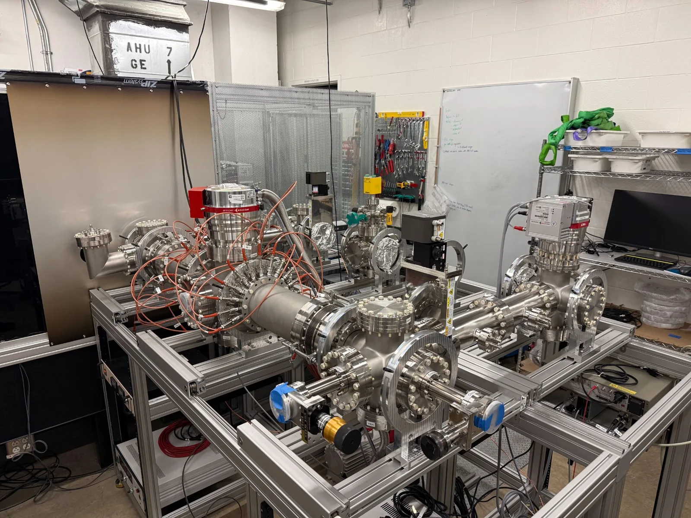
![Animation in three acts over the layout of our beamline. First, one electrode after the other from the ion source to the MR-ToF is set to 1 volt, and the potential it creates glows around it. Second, 300 silicon ions fly through the beamline, leaving red trails. Third, nine checkpoints light up one after the other, each showing the simulated beam spot in blue and the AI model's prediction in red; both transmissions fall from 100 percent at the start to 58 percent simulated and 55 percent predicted at the MR-ToF.](assets/img/projects/digital-twin-still.webp)
Experiments at accelerator facilities
-

ISOLTRAP at CERN
Precision mass spectrometer at CERN's radioactive ion beam facility ISOLDE, used for nuclear structure measurements, nuclear astrophysics, and Standard Model tests.
Experiment site ↗ -

BECOLA at FRIB
Precision laser spectrometer at the Department of Energy's Facility for Rare Isotope Beams at Michigan State, for nuclear structure measurements and beyond-Standard-Model searches.
Experiment site ↗ -

LEBIT at FRIB
Precision mass spectrometer at FRIB for nuclear structure measurements, nuclear astrophysics studies, and Standard Model tests.
Experiment site ↗